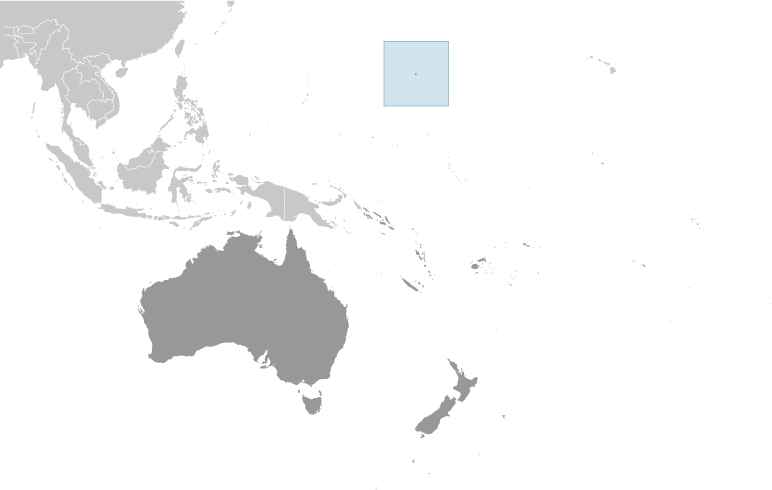
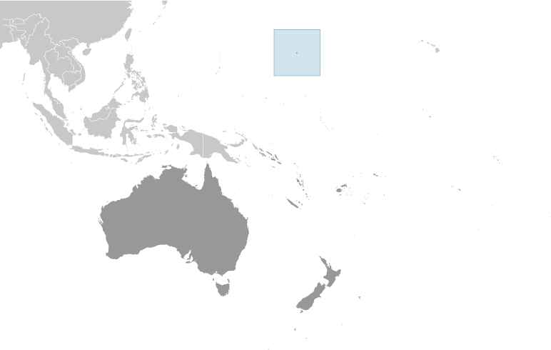

Australia - Oceania ::
Wake Island
-
Introduction :: Wake Island
-
Background:The US annexed Wake Island in 1899 for a cable station. An important air and naval base was constructed in 1940-41. In December 1941, the island was captured by the Japanese and held until the end of World War II. In subsequent years, Wake became a stopover and refueling site for military and commercial aircraft transiting the Pacific. Since 1974, the island's airstrip has been used by the US military, as well as for emergency landings. Operations on the island were temporarily suspended and all personnel evacuated in 2006 with the approach of super typhoon IOKE (category 5), but resultant damage was comparatively minor. A US Air Force repair team restored full capability to the airfield and facilities, and the island remains a vital strategic link in the Pacific region.
-
Geography :: Wake Island
-
Location:Oceania, atoll in the North Pacific Ocean, about two-thirds of the way from Hawaii to the Northern Mariana IslandsGeographic coordinates:19 17 N, 166 39 EMap references:OceaniaArea:total: 6.5 sq kmland: 6.5 sq kmwater: 0 sq kmcountry comparison to the world: 246Area - comparative:about 11 times the size of the National Mall in Washington, DCLand boundaries:0 kmCoastline:19.3 kmMaritime claims:territorial sea: 12 nmexclusive economic zone: 200 nmClimate:tropicalTerrain:atoll of three low coral islands, Peale, Wake, and Wilkes, built up on an underwater volcano; central lagoon is former crater, islands are part of the rimElevation:0 m lowest point: Pacific Ocean8 highest point: unnamed locationNatural resources:noneLand use:agricultural land: 0% (2011 est.)arable land: 0% (2011 est.) / permanent crops: 0% (2011 est.) / permanent pasture: 0% (2011 est.)forest: 0% (2011 est.)other: 100% (2011 est.)Irrigated land:0 sq km (2012)Natural hazards:subject to occasional typhoonsEnvironment - current issues:potable water obtained through a catchment rainwater system and a desalinization plant for brackish ground water; hazardous wastes moved to an accumulation site for storage and eventual transport off site via bargeGeography - note:strategic location in the North Pacific Ocean; emergency landing location for transpacific flights
-
People and Society :: Wake Island
-
Population:no indigenous inhabitants (2018 est.)
note: approximately 100 military personnel and civilian contractors maintain and operate the airfield and communications facilities
-
Government :: Wake Island
-
Country name:conventional long form: noneconventional short form: Wake Islandetymology: although first discovered by British Captain William WAKE in 1792, the island is named after British Captain Samuel WAKE who rediscovered the island in 1796Dependency status:unincorporated unorganized territory of the US; administered from Washington, DC, by the Department of the Interior; activities in the atoll are currently conducted by the 11th US Air Force and managed from Pacific Air Force Support CenterLegal system:US common lawCitizenship:see United StatesFlag description:the flag of the US is used
-
Economy :: Wake Island
-
Economy - overview:Economic activity is limited to providing services to military personnel and contractors located on the island. All food and manufactured goods must be imported.
-
Communications :: Wake Island
-
Telephone system:general assessment: satellite communications; 2 Defense Switched Network circuits off the Overseas Telephone System (OTS); located in the Hawaii area code - 808Broadcast media:American Armed Forces Radio and Television Service (AFRTS) provides satellite radio/TV broadcasts (2018)
-
Transportation :: Wake Island
-
Airports:1 (2018)country comparison to the world: 238Airports - with paved runways:total: 1 (2018)2,438 to 3,047 m: 1 (2018)Ports and terminals:none; two offshore anchorages for large shipsTransportation - note:there are no commercial or civilian flights to and from Wake Island, except in direct support of island missions; emergency landing is available
-
Military and Security :: Wake Island
-
Military - note:defense is the responsibility of the US; the US Air Force is responsible for overall administration and operation of the island facilities; the launch support facility is administered by the US Missile Defense Agency (MDA)
-
Transnational Issues :: Wake Island
-
Disputes - international:claimed by Marshall Islands